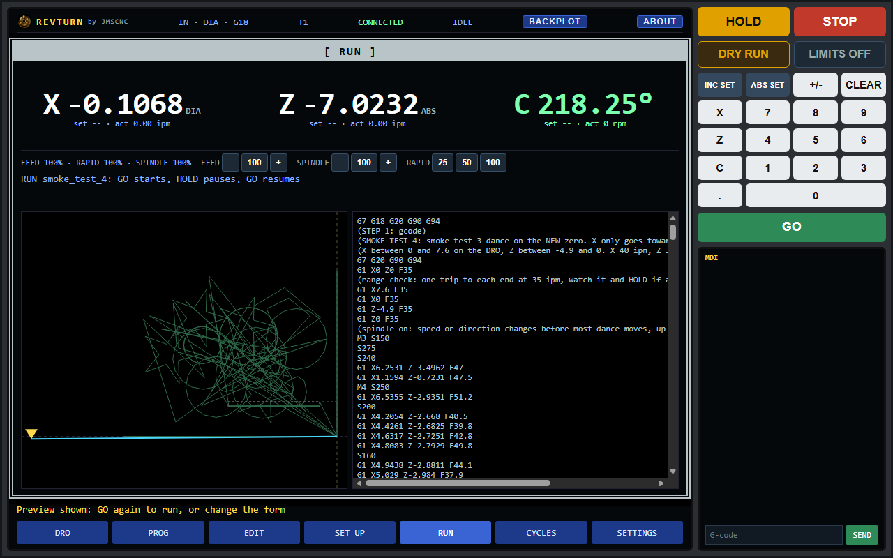
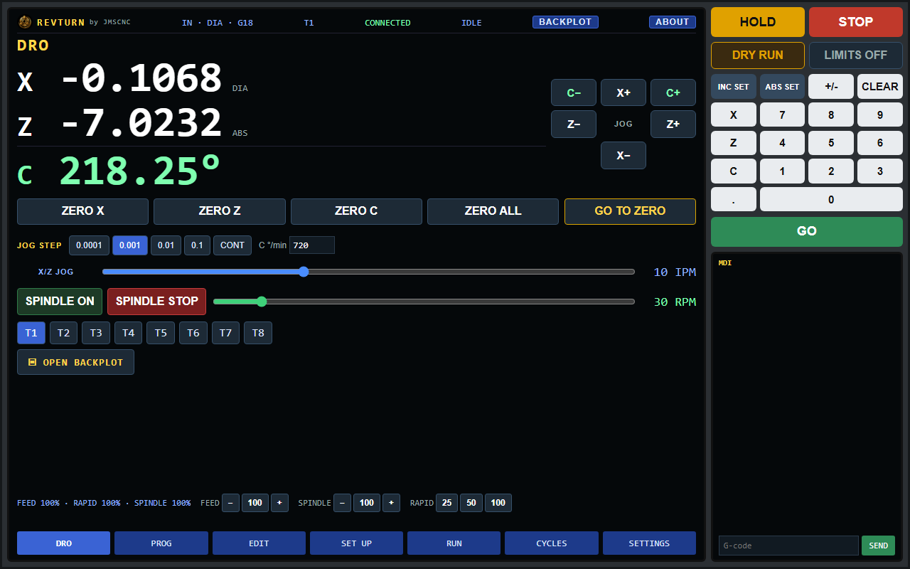
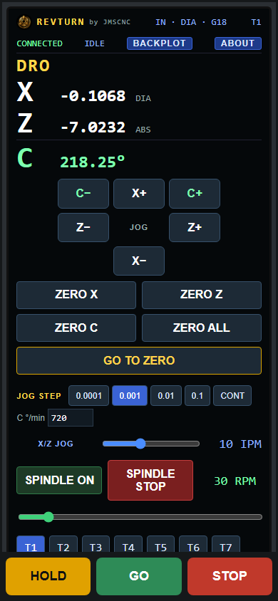
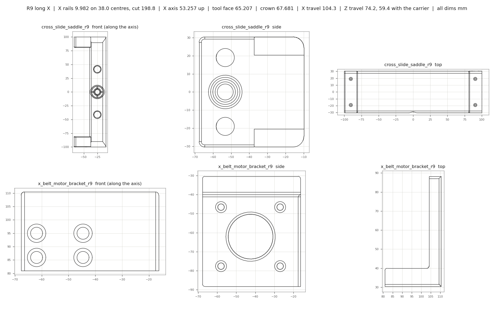
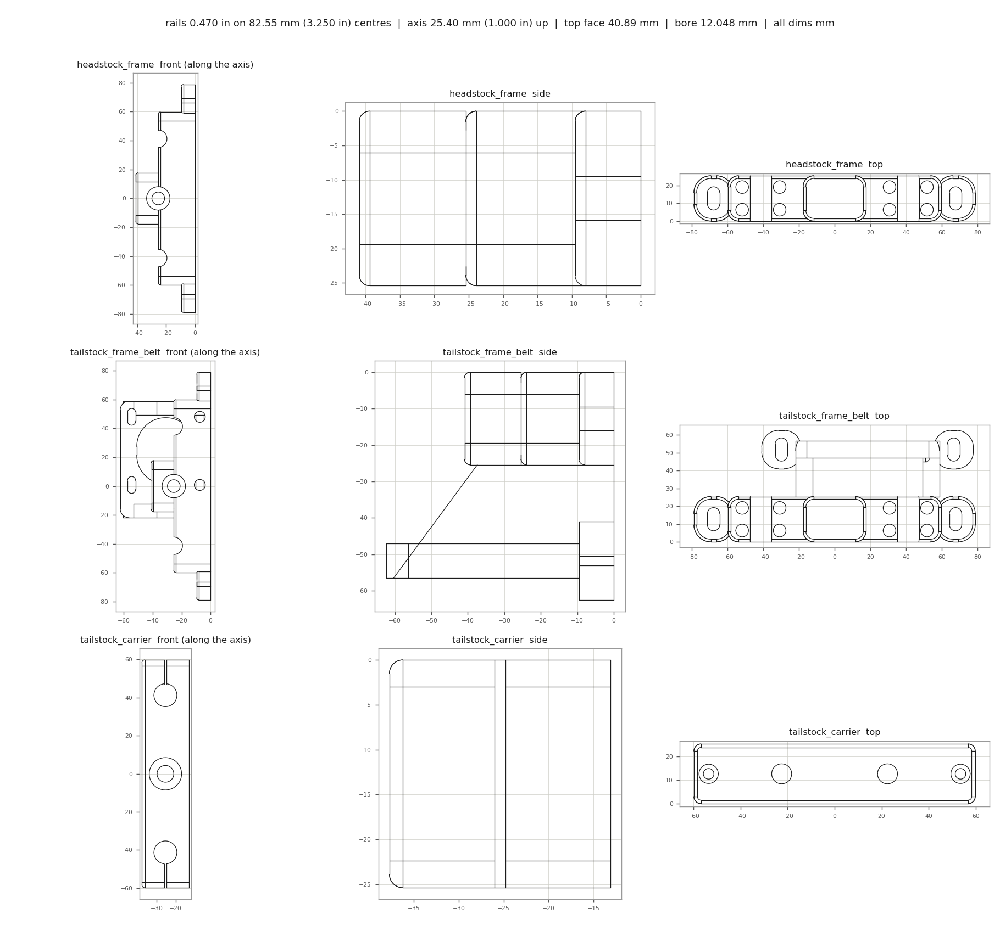
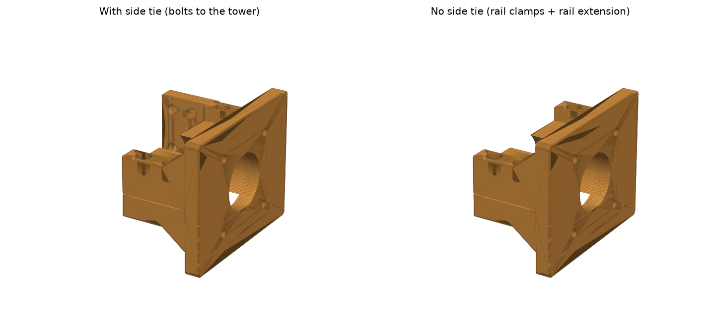
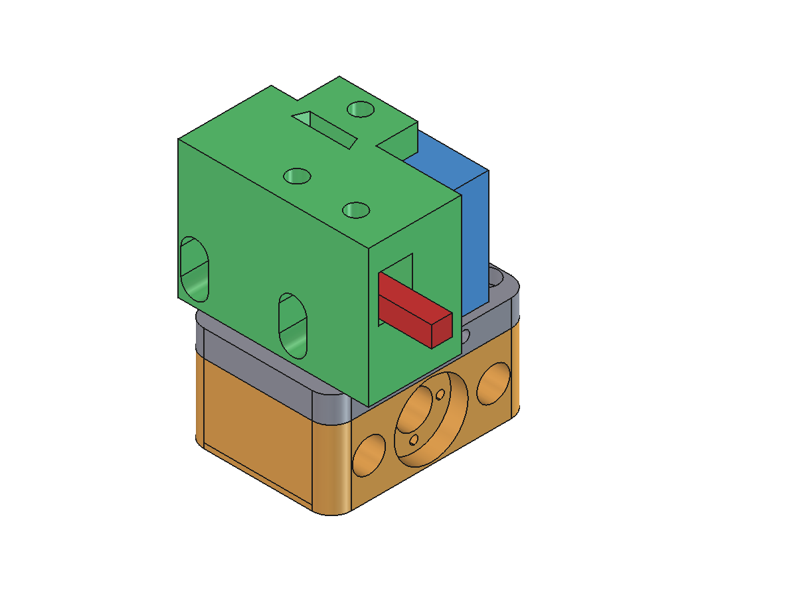
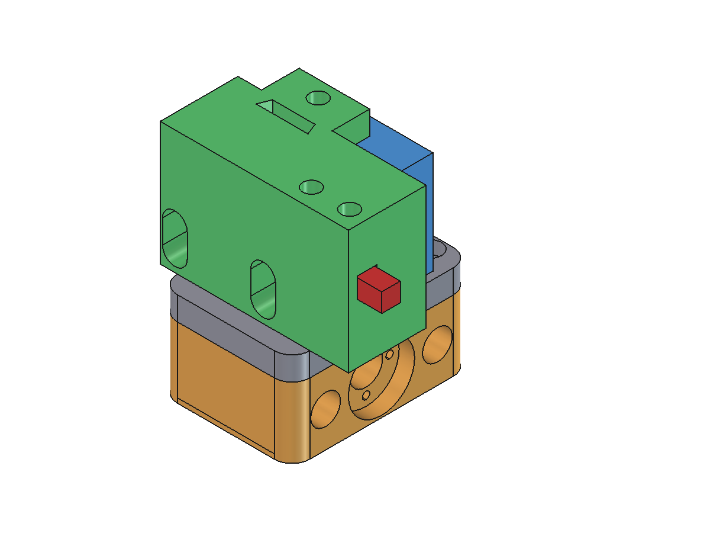
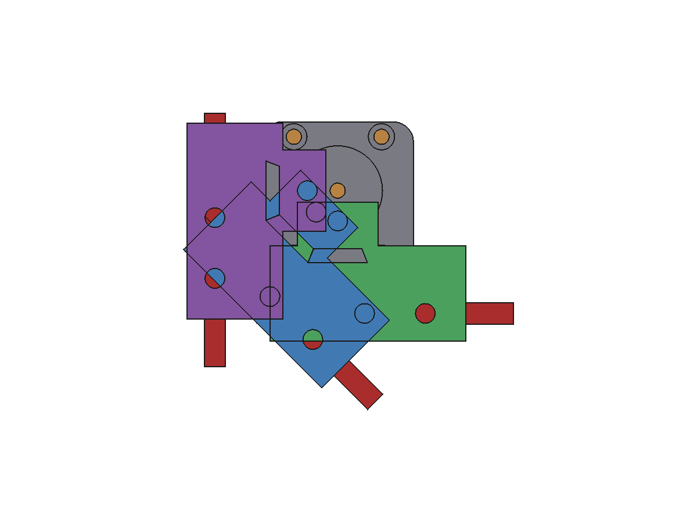

REVTURN by JMSCNC
A touch-screen CNC lathe controller on a $5 ESP32.
ProtoTRAK / Fanuc style conversational control, built into the grblHAL firmware and served from the lathe itself. Open it on a phone, a tablet by the machine or a PC. No app, no sender, no cloud.

A real lathe control, not a g-code sender
REVTURN turns a $5 ESP32 into the brains of a CNC lathe. The motion runs on grblHAL, the proven open-source CNC firmware. On top of it sits a full control screen, served by the ESP32 over WiFi: big DRO, HOLD / GO / STOP always on screen, conversational cycles you fill in like a ProtoTRAK, programs, a live backplot and every machine setting, all in one look.
NO PC
The screen lives in the controller's flash. Any browser on the shop WiFi is the control panel: phone, tablet, laptop, all at once.
SPINDLE OR C AXIS
The chuck motor is a stepper: a spindle in rpm under M3 / M4, or a rotary C axis in degrees for threading, indexing and polygons.
THREADS WITHOUT AN ENCODER
Threading moves Z and C together in lockstep, so the pitch is exact without a spindle encoder.
OPEN SOURCE
Firmware, screen, printed parts and every FreeCAD source are on GitHub. Build your own, or buy a board ready to wire.
Every screen, straight off the lathe
Tap a key to switch screens, like on the real thing. Tap a picture to zoom.

Built like a machine control
CONVERSATIONAL CYCLES
Face, turn (taper, chamfer, radius), bore, thread, groove / part-off, peck drill, polygon flats and index. Fill in the form, GO previews the toolpath, GO again runs it.
PROGRAMS
Chain cycles and raw g-code steps into a program, save it on the lathe, import Fusion 360 lathe posts. Dry run (air cut) first if you like.
LIVE BACKPLOT
Watch the tool trace over the planned path with a live tool marker, and a one-line DRO across the top of RUN with set and actual feed and rpm.
HOLD / GO / STOP
Always on screen, on every screen. Feed, spindle and rapid overrides. Alarms explained in plain words, with RESET and UNLOCK.
TOOL TABLE
T1 to T8 with touch-off (offsets from T1), picked with one tap, and stored stroke limits. Saved on the lathe, so every screen shares them.
JOG ANY WAY
Step or continuous jog from the pad, the keyboard arrows (Page Up / Down for the chuck), or a WiFi jog-wheel pendant.
EVERY SETTING
SETTINGS reads grblHAL's own list: all 128 settings in 19 groups, with the right control for each, help text, search, backup and reboot.
MANY SCREENS
Any number of phones and tablets at once. Any of them can HOLD or STOP; a running program shows live on all of them.
SHORT-WAY HOME
The chuck goes back to C zero the short way at the end of a program instead of unwinding hundreds of turns.
WIFI THAT STAYS UP
Rejoins the network by itself after a drop. Find it at revturn.local. Crash-safe step timing for the stepper spindle.

REVTURN controller board, preflashed
A bare ESP32 on a screw-terminal breakout board, flashed with the REVTURN firmware and screen and tested before it ships. Wire it to your stepper drivers, power it up, open the screen.
- ESP32 DevKit (WROOM-32, 4 MB, USB) on a screw-terminal breakout board
- REVTURN firmware (grblHAL) and the REVTURN screen, flashed and tested
- Set up as a lathe: X, Z and the chuck as spindle or C axis
- Not included: stepper drivers, motors, power supply or the lathe
Wiring (screw terminals)
| Signal | ESP32 pin | Goes to |
|---|---|---|
| X step / dir | GPIO 16 / 17 | Cross slide driver (TB6600 or similar) |
| Z step / dir | GPIO 21 / 22 | Carriage driver |
| C step / dir | GPIO 18 / 19 | Chuck driver (spindle or C axis) |
| Stepper enable | GPIO 23 | Driver enable inputs (shared) |
| PWM spindle | GPIO 4 (PWM), 13 (enable) | Optional router / live tool |
| Limits (spare) | GPIO 32, 33, 27 | X, Y, Z limit inputs, not wired by default |
Every machine is different: after wiring, set steps per mm (or per degree), max rates and acceleration for your screws, belts and motors in SETTINGS. The GitHub page has the settings from the REVTURN lathe as a starting point.
Free and open: flash it yourself
- Get an ESP32 DevKit (WROOM-32, 4 MB) and wire it to your drivers using the table above.
- Build and flash the firmware from GitHub with PlatformIO:
pio run -e revturn_lathe -t upload. - Connect it to your shop WiFi, then open
http://revturn.local/on any phone, tablet or PC. - Set your machine up in SETTINGS (steps, rates, lathe mode) and your tools in SET UP. Make chips.
The firmware is grblHAL with the REVTURN changes, under the GNU GPL v3. The printed parts are CC BY-SA 4.0. Everything is on GitHub.
The junk-bin lathe it was built on
REVTURN grew up on a 3D-printed mini lathe put together from what was laying around the shop: rails from a 3018 CNC upgrade and a scrapped 3D printer, an AliExpress headstock, a Cricut stepper and a StepperOnline NEMA 23 on the chuck. Every printed part is an original FreeCAD design, with the source on GitHub so you can change a number and rebuild it for your own parts.
First test run with all 3 motors linked: X, Z and the chuck in synced moves, nonstop spindle speed and direction changes, and a C-axis threading cycle.






Like REVTURN? Keep it turning.
REVTURN is free and open source. If it helped you, or you just like watching junk turn into a lathe, a coffee keeps the designs and the updates coming.
☕ BUY ME A COFFEE